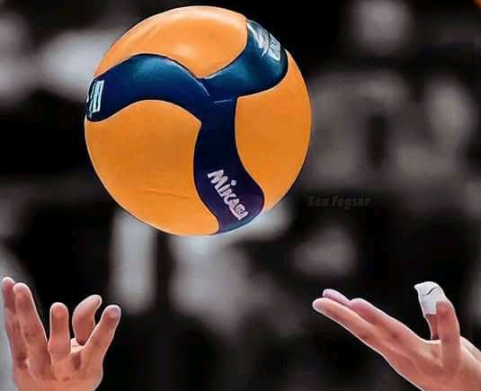

ホームバレーボール
10年間続けた、熱い想い。

唯一、小さいころからずっと続けられる趣味。
それはバレーボール。ここまで続けられるのは、
おそらく出会うそして支えてくれる仲間のおかげです。

バレーボールを始めたの中学一年生から。
リベロを1年、セッターを今に至るまで約10年間してます。

出会いと別れの繰り返し。
しかし、「縁」が切れることはありませんでした。
それはセッターという役職から得た"コミュニケーション力"。
常に日頃から人と話し続けることで、
無意識に相手の様子を伺うこともするようになりました。